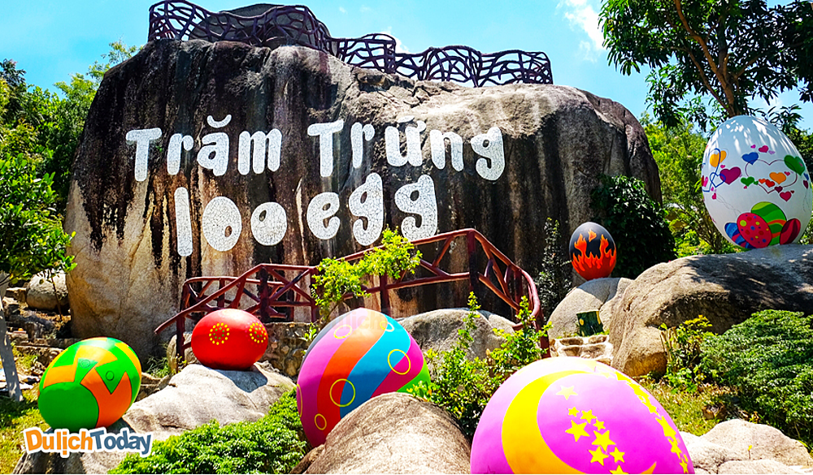

Những Địa Điểm Du Lịch Hà Nội Dành Cho Bạn
- Khu Du Lịch Trăm Trứng Nha Trang 
- Khu Du Lịch Ba Hồ Nha Trang
- Khu Du Lịch Yang Bay Nha Trang
- Khu Du Lịch Sao Biển Nha Trang>
- Khu Du Lịch Dốc Lết Nha Trang
Khu du lịch Trăm Trứng là một trong ba địa điểm tắm bùn lớn nhất Nha Trang. Nơi đây không chỉ là cung cấp dịch vụ tắm bùn khoáng thư giãn, mà còn có nhiều hoạt động vui chơi khác để bạn trải nghiệm giữa môi trường thiên nhiên và cảnh quan trong lành.
Đối với những bạn thích chiêm ngưỡng các tạo tác của tự nhiên, đừng bỏ qua Khu du lịch Ba Hồ, nơi có con suối Ba Hồ hùng vĩ và không gian thiên nhiên xanh mát. Suối mang tên Ba Hồ là vì từ đầu nguồn, suối có ba lần mở lòng ngay lưng núi, tạo ra ba hồ nước lớn liên tiếp giữa sườn núi. Ba hồ nước lại nối với nhau bằng những triền suối gập ghềnh cheo leo, khiến những dòng nước chảy tràn xuống như thác, tạo ra một bức tranh thiên nhiên sống động, hoành tráng. Đến tham quan Khu du lịch Ba Hồ, bạn sẽ có cơ hội chinh phục những vách núi trơn trượt trong cảm giác hồi hộp xen lẫn thích thú. Bên cạnh đó, bạn còn được tắm suối, chèo thuyền kayak, cắm trại, tham quan công viên heo vàng, vườn tổ chim, công viên đá, v.v

Đi du lịch Nha Trang mà không ghé qua Khu du lịch Yang Bay thì xem như bạn chưa biết đến Nha Trang rồi. Với độ cao 100m so với mực nước biển, thác Yang Bay nằm giữa thung lũng núi rừng của huyện Khánh Vĩnh, và được cho là rừng nguyên sinh đẹp nhất tỉnh Khánh Hòa.

Khu du lịch sinh thái Sao biển thuộc bán đảo Bình Lập, một trong Tứ Bình nổi tiếng của Khánh Hòa gồm: Bình Hưng, Bình Lập, Bình Ba và Bình Tiên. Khu du lịch Sao Biển nép mình dưới chân núi, bên cạnh làng chài Bãi Lao và bãi biển xinh đẹp, hoạt động dựa trên tiêu chí bảo tồn thiên nhiên, bảo vệ môi trường và văn hóa địa phương. Nhiều gia đình đã đưa trẻ em cùng đến đây để tham quan, khám phá thế giới nước, nhờ vào cấu trúc thềm cát nông, bề mặt bằng phẳng và chắc chắn. Với bãi tắm kín gió và an toàn, các bé tha hồ quan sát sinh vật biển và nghịch nước.
Dốc Lết là một bãi biển nổi tiếng với những đụn cát cao vút, mà bạn phải vượt qua hết để “lết” được đến bãi biển này. Quanh năm, biển Dốc Lết gần như êm sóng, còn đáy biển thì chỉ thoải dần ra xa, rất an toàn cho các em nhỏ và những người không biết bơi.